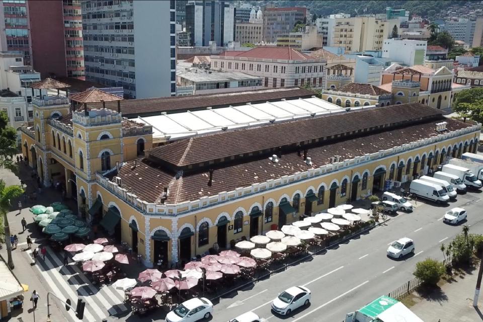

Florianópolis
Florianópolis, capital do estado de Santa Catarina, é um dos destinos turísticos mais famosos do Brasil, conhecida por sua mistura única de belas praias, natureza exuberante, rica cultura e vida urbana vibrante. A cidade, muitas vezes chamada de "Ilha da Magia", é famosa por suas mais de 40 praias, que variam de calmas e tranquilas, ideais para famílias, a outras mais agitadas, perfeitas para esportes aquáticos como o surfe.
Além de suas paisagens naturais impressionantes, Florianópolis também se destaca pela sua arquitetura histórica, influências culturais açorianas, uma vida noturna agitada e uma excelente gastronomia, com ênfase em frutos do mar. A cidade combina o charme de uma ilha com a infraestrutura de uma capital moderna, tornando-se um destino turístico completo para todos os tipos de viajantes.
Principais pontos turísticos
- Praia Mole
- Ilha do Campeche
- Centro Histórico de Florianópolis
- Lagoa da Conceição
- Ponta das Canas e Praia Brava
A Praia Mole é uma das mais conhecidas e visitadas de Florianópolis, famosa por sua beleza natural e pela vibe descontraída. Com águas cristalinas, ondas fortes e uma extensa faixa de areia, é um destino popular para surfistas e jovens. Além disso, a praia conta com diversos bares e restaurantes ao redor, oferecendo uma infraestrutura excelente para os turistas.
A Praia Mole é um dos principais cartões-postais da cidade, atraindo tanto aqueles que buscam diversão e esporte quanto quem deseja relaxar à beira-mar.
A Ilha do Campeche é um dos destinos mais paradisíacos da cidade. Com praias de águas cristalinas, areia branca e paisagens deslumbrantes, a ilha é famosa por suas trilhas ecológicas e o sítio arqueológico com pinturas rupestres. O acesso à ilha é feito por barco e a visitação é limitada, o que ajuda a preservar seu ambiente natural.
A Ilha do Campeche é uma excelente opção para quem busca ecoturismo e um contato mais profundo com a natureza. Além disso, sua beleza e tranquilidade fazem dela um dos destinos mais exclusivos de Florianópolis.
O Centro Histórico de Florianópolis é uma área rica em história e cultura. Com ruas estreitas, praças e casarões coloniais, a região exibe a influência açoriana, refletida nas construções e na cultura local. O Mercado Público, a Catedral Metropolitana e a Praça XV de Novembro são alguns dos pontos históricos mais visitados.
O Centro Histórico é fundamental para quem deseja conhecer a história de Florianópolis, com muitos museus, igrejas e prédios antigos que contam a história da cidade desde sua fundação.
A Lagoa da Conceição é um dos principais cartões-postais de Florianópolis. Cercada por montanhas e com águas calmas, é um ótimo local para a prática de esportes aquáticos, como windsurf e stand-up paddle. Além disso, a região conta com muitos bares, restaurantes e opções de lazer, incluindo trilhas e passeios de barco.
A Lagoa é um excelente local para atividades ao ar livre e turismo gastronômico, além de ser um dos lugares mais visitados da cidade, oferecendo uma bela vista e excelente infraestrutura.
Essas praias, localizadas no norte da ilha, são ideais para quem busca tranquilidade e contato com a natureza. Ponta das Canas é uma praia mais tranquila, ideal para famílias, enquanto a Praia Brava atrai surfistas pela força de suas ondas. Ambas oferecem uma boa infraestrutura de hotéis e restaurantes.
São destinos populares para quem quer fugir das praias mais movimentadas do centro da cidade, oferecendo opções de lazer mais tranquilas e em meio à natureza.
Principais pontos gastronômicos
- Mercado Público de Florianópolis 
- Localização: Centro de Florianópolis.
- Restaurante Ostradamus
- Localização: Praia do Ribeirão da Ilha
- Restaurante Coco Bambu
- Localização: Jurerê Internacional.
- Restaurante Alameda
- Localização: Bairro Jurerê.
O Mercado Público de Florianópolis é um dos pontos mais tradicionais da cidade, onde é possível encontrar uma variedade de produtos locais, desde peixes e frutos do mar até produtos artesanais. No local, há também diversos restaurantes e barracas que servem pratos típicos, como a famosa "sequência de camarão" e a tradicional "moqueca".
O Mercado Público é o melhor lugar para experimentar a culinária típica da ilha, oferecendo uma grande variedade de pratos à base de frutos do mar e produtos frescos.
Famoso por suas ostras frescas, o restaurante Ostradamus é uma verdadeira instituição da gastronomia local. Localizado no bairro Ribeirão da Ilha, conhecido pela produção de ostras, o restaurante oferece uma experiência gastronômica única com pratos de frutos do mar e uma vista incrível para a baía.
O Ostradamus é imperdível para quem deseja degustar ostras frescas e conhecer melhor a gastronomia baseada em frutos do mar da ilha.
Com uma estrutura luxuosa e uma culinária de alta qualidade, o Restaurante Coco Bambu é conhecido por sua grande variedade de pratos à base de frutos do mar e sua famosa "sequência de camarão". O ambiente sofisticado e o atendimento impecável tornam o restaurante uma excelente opção para quem busca uma refeição mais elaborada.
O Coco Bambu é uma das opções mais sofisticadas para quem deseja uma experiência gastronômica de alto nível em Florianópolis.
O restaurante Alameda é um dos mais conhecidos de Jurerê, bairro famoso da capital catarinense. O cardápio do Alameda tem como destaque os frutos do mar, principalmente a lula e o camarão. Para acompanhar sua refeição no restaurante à beira-mar, a cartela de vinhos e drinks é perfeita. o restaurante também conta com um espaço kids, para famílias que nos visitam com crianças.
O grande diferencial do Alameda, no entanto, é a sua oferta de café da manhã em Florianópolis. Dessa maneira, quem deseja aproveitar o desjejum com uma vista encantadora da praia, deve aproveitar bastante a opção.
Principais pontos culturais
- Palácio Cruz e Souza
- Localização: Centro de Florianópolis.
- Teatro Álvaro de Carvalho
- Localização: Centro de Florianópolis.
- Festa do Divino Espírito Santo
- Localização: Centro de Florianópolis.
- Casa da Alfândega
- Localização: Centro de Florianópolis.

O Palácio Cruz e Souza é também conhecido como Museu Histórico de Santa Catarina e como Palácio Rosado. Ele já foi um dia sede do Governo do Estado e hoje abriga peças antigas, como móveis, pinturas e outros itens históricos.
É considerado um dos mais importantes museus da região e um dos que mais recebem turistas ao longo do ano. Passeio para toda a família e cheio de riqueza cultural, a visita ao Palácio Cruz e Souza é excelente para quem adora mergulhar na história de uma cidade e de um Estado, com tantos detalhes e em um espaço amplamente reformado.
O Teatro Álvaro de Carvalho, também conhecido como TAC, é um dos principais espaços culturais da cidade, com uma programação variada de peças teatrais, concertos musicais, dança e outras manifestações artísticas. Localizado no centro histórico, o teatro é um ícone cultural de Florianópolis.
O TAC é fundamental para a cena cultural da cidade, promovendo diversas manifestações artísticas e culturais, além de ser um importante centro de entretenimento.
A Festa do Divino Espírito Santo é uma das celebrações religiosas mais tradicionais de Florianópolis. Realizada anualmente, a festa conta com procissões, missas, danças e apresentações culturais, sendo um evento importante para a preservação das tradições açorianas.
A festa é uma das principais manifestações culturais da cidade, que mistura religiosidade com tradições populares, atraindo turistas e moradores para celebrar a fé e a cultura local.
A Casa da Alfândega é um espaço cultural que abriga exposições de arte, mostras culturais e eventos de artesanato. Situada em um prédio histórico, o local também oferece aos visitantes a oportunidade de conhecer um pouco da história do comércio e da economia de Florianópolis.
A Casa da Alfândega é uma excelente opção para quem deseja explorar as artes e o patrimônio cultural de Florianópolis em um ambiente histórico.